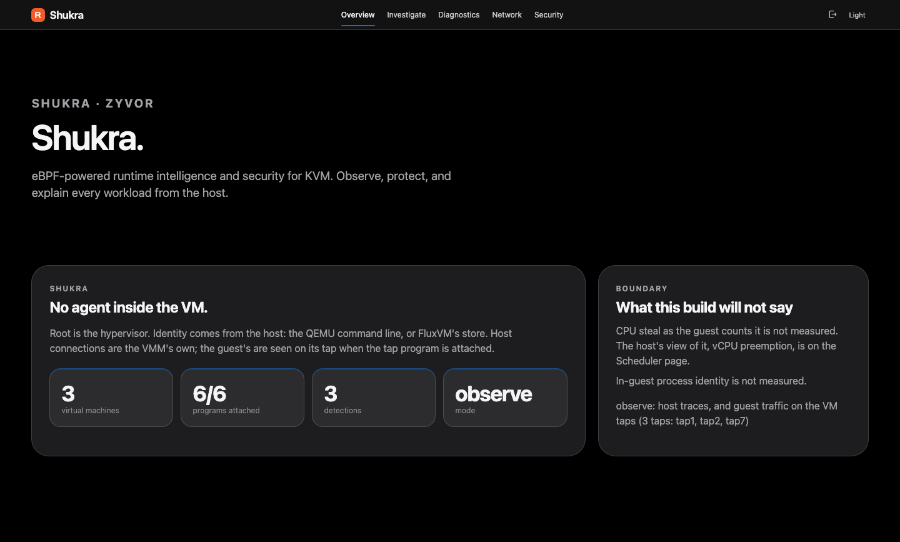

A brochure for teams that run KVM: how Shukra watches every QEMU workload from the hypervisor with eBPF, what happens step by step when a VM turns slow or its traffic stops, and everything else it does.
Standalone eBPF for KVM hosts · QEMU, libvirt, kubevirt and FluxVM · x86_64 and arm64 packages
Open source under the Apache License 2.0. Copyright 2026 Zyvor.

A guest can tell you it is slow. Only the host knows why: whether a neighbour took its CPU, the disk stalled, the host dropped its packets or the guest stopped reading its NIC. Shukra sits on the hypervisor and answers that, without installing anything in the VM.
Shukra is eBPF runtime intelligence and security for KVM: a daemon on the hypervisor that attaches kernel traces, joins them to the QEMU process, and gives an operator a console and a CLI that say what they know, how they know it, and what they cannot see.
Privileged. Loads the eBPF programs, scans /proc for QEMU and FluxVM guests, keeps the flight recorder and detection rules, and serves the API and the console on port 30970.
An operator CLI that talks to the API only and never loads BPF. Status, doctor, traces, explain, incident, watch, isolate: one screen to trust first, then the detail.
/api/v1, only two of which change stateexplain, incident, isolate and doctoreBPF lets Shukra run small, verified programs inside the Linux kernel at the points where VM exits, scheduling, disk requests and packets already pass. That is how it sees a guest from outside: no kernel module, no agent, no change to the VM.
From source to a kernel hook and back to the daemon. Illustrative.
Tracepoints for KVM exits, the scheduler, block requests and dropped packets; kprobes on TCP connect; and TCX on each VM's tap, on Linux 6.6 and newer.
Hot paths stay in maps as counters and histograms. A small ring buffer carries only discrete events, and every source of events is sampled or rate-limited.
The verifier refuses anything unsafe, and each program is its own object. A kernel that cannot run one reports it detached, with the reason, and the others keep running.
| Agent inside each guest | Kernel module | Shukra with eBPF | |
|---|---|---|---|
| Sees host-side causes | no: it only sees the guest's view | yes | yes: exits, run-queue delay, preemption, block, drops |
| Changes to guests | one install per VM, kept patched | none | none |
| Risk to the host | lives in someone else's VM | a bug can crash the hypervisor | the verifier proves each program safe before it runs |
A VM's life crosses the same layers on every host. Shukra places one program at each layer that matters and reads names and threads from /proc, so the picture of a slow or silent VM runs from the guest's exits to the last function that freed its packet.
A VM is slow for host-side reasons first: it exits too often, or its vCPU threads are runnable and waiting for a CPU. Both are visible only from the host.
The guest's own traffic crosses the host side of its tap. Seeing it there gives the guest's addresses and DNS names, with no agent and without reading application data.
Most packet loss is decided inside the host kernel. The tracepoint says why, and which function freed the packet, so a firewall rule and a full queue are told apart.